/* Моя кошка замечательно разбирается в программировании. Стоит мне объяснить проблему ей - и все становится ясно. */
John Robbins, Debugging Applications, Microsoft Press, 2000

/* Моя кошка замечательно разбирается в программировании. Стоит мне объяснить проблему ей - и все становится ясно. */
John Robbins, Debugging Applications, Microsoft Press, 2000
В папке tools есть файл hierarchyviewer.bat, который запускает программу для отладки и оптимизации пользовательского интерфейса.
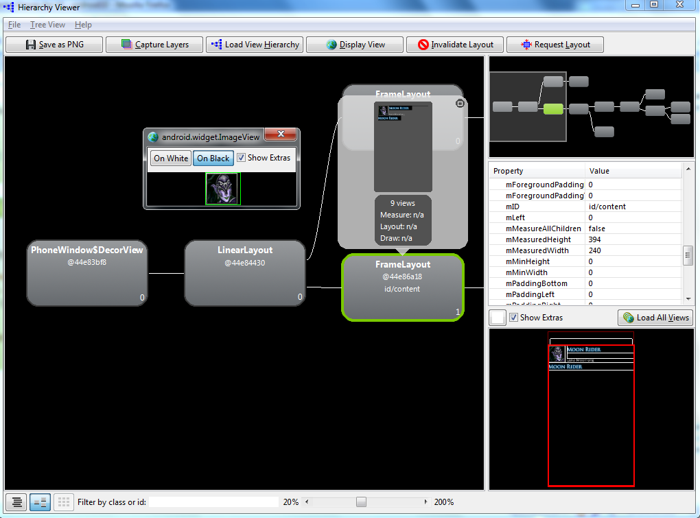
Программа отображает иерархию видов в форме древовидной структуры. Вы загружаете шаблон и проверяете на возможнжные недоработки или возможность оптимизации, сведя к минимуму количество содержащихся в нём видов.
Чтобы приступить к отладке пользовательского интерфейса, запустите приложение в эмуляторе и откройте в нём шаблон. Затем запустите hierarchyviewer.bat. У вас откроется окно для просмотра иерархии устройства.
В левой части области Devices отображается набор устройств. При выборе устройства в правой области отображается список его окон. Чтобы просмотреть иерархию видо для отдельного взятого окна, выберите это окно в правой области и затем нажмите кнопку Load View Hierarchy.
В левой области окна просмотра иерархии видов вы видите иерархию видов конкретного окна. При выборе элемента вида в левой области можно просмотреть свойства этого вида, открывающиеся справа, а также расположение вида относительно других видов. Вокруг выбранного вида появляется красная рамка.
В нижнем левом углу окна инструмента для просмотра иерархии видов расположены две кнопки. Левая позволяет отобразить древовидную структуру видов, правая - даёт возможность показать актуальный шаблон в режиме Pixel Perfect (Идеальная проекция). В таком режиме вы получаете представление шаблона с точностью до пикселя.
Создадим простое приложение с тремя экранами, которые содержат различные комбинации компонентов для иллюстрации работы с Hierarchy Viewer. Каждый экран использует разметки LinearLayout и FrameLayout с видами TextView и ImageView. Для изображений используются три картинки: кот, сосуд с водой, рыба:
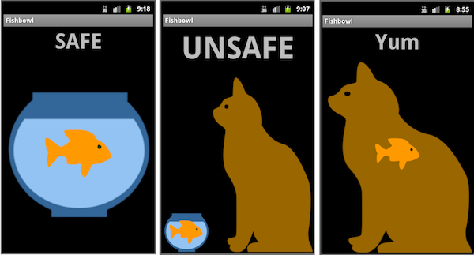
Первый экран состоит из вертикального LinearLayout с двумя "ячейками": вид TextView со словом Safe и компоновка FrameLayout, которая содержит два ImageView: сосуд и рыбу.
Второй экран использует вертикальную компоновку LinearLayout с двумя "ячейками": вид TextView со словом Unsafe и компоновку LinearLayout с горизонтальной ориентацией, который в свою очередь также содержит два элемента: в первом находится FrameLayout, который содержит два ImageView с сосудом и рыбой, а второй элемент - ImageView с котом.
На третьем экране используется вертикальная компоновка LinearLayout с двумя дочерними элементами: TextView со словом Yum и FrameLayout, который содержит два ImageView: кот и рыба.
Запускаем приложение в эмуляторе. Hierarchy Viewer можно запустить из перспективы Eclipse, как плагин или через командную строку.
При первой загрузке нужно немного подождать. Когда данные загрузятся, то можно приступать к работе. Есть два варианта работы в Hierarchy Viewer, между которыми можно переключаться:
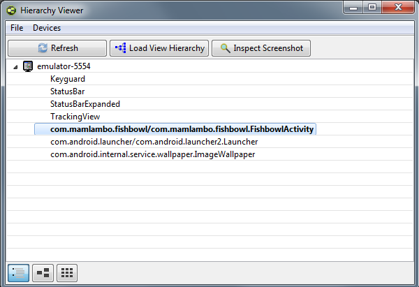
В режиме Inspect Screenshot вы получаете представление шаблона с точностью до пикселя.
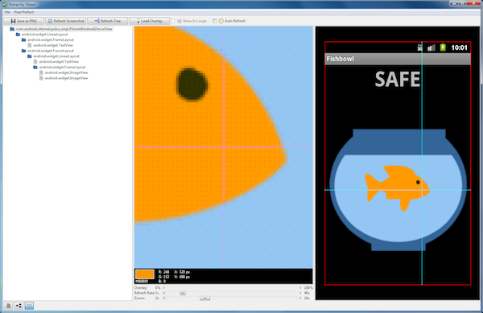
Вы можете увеличивать определенные участки экрана, проверить расположение компонентов на экране и так далее. Также можно сохранить скриншот в PNG-файл. Используйте этот режим для дизайна вашего интерфейса, используя наложение (перемещая ваши картинки).
Рассмотрим режим Load View Hierarchy.
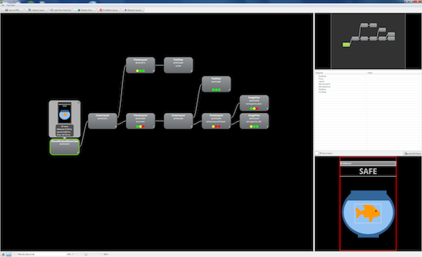
Данный режим имеет несколько панелей:
В основной левой панели мы видим карту элементов управления в древовидном интерфейсе. Все элементы текущей разметки показаны слева направо в соответствии с вашим шаблоном.
Например, если брать первый экран, то справа мы видим два ImageView с сосудом и рыбой. Двигаясь влево, вы видите, что они находятся в FrameLayout с идентификатором @id/frameLayoutFishbowl. Продолжая движение влево на следующий уровень, мы попадаем на корневой элемент LinearLayout, содержащий TextView и FrameLayout с идентификатором @id/frameLayoutFishbowl.
Вы можете щёлкнить по любому элементу в Tree Hierarchy. Появится специальное окно с различной информацией о выбранном элементе. Например, для TextView можно узнать тип (TextView), системный идентификатор и выводимый текст. Цветные точки помогают определить производительность.
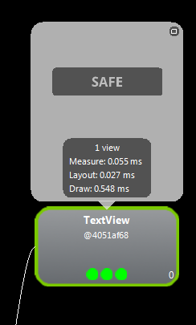
Для ImageView с сосудом:
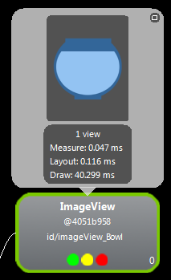
Нужный элемент можно выделить через панель Loupe. Это удобно, когда древовидная структура слишком большая.
Выделим элемент с рыбой. На панели свойств можно увидеть различные свойства к данному элементу.
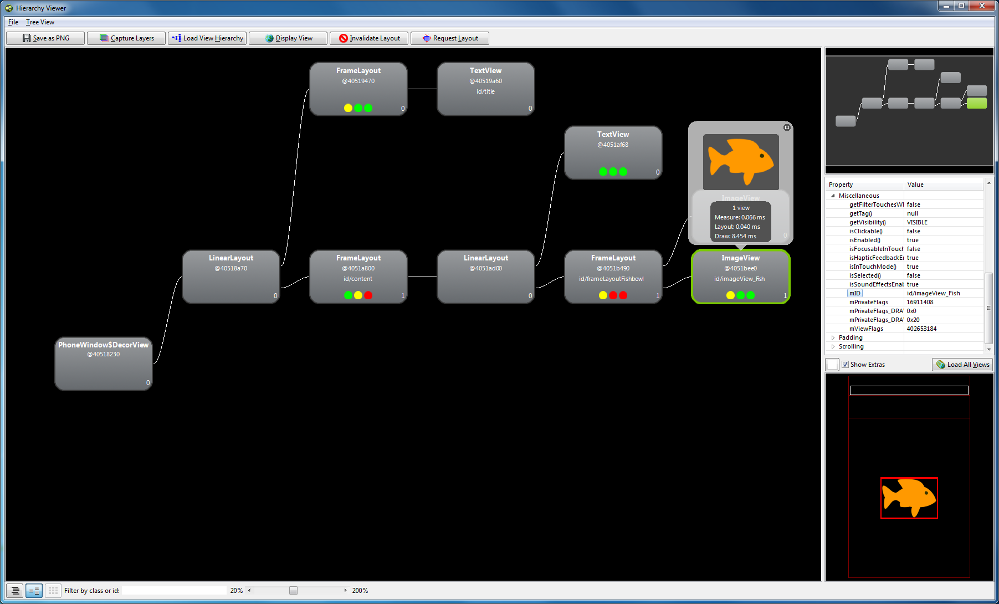
Если вы обновляете свой графический интерфейс, то необходим обновить содержание и в Hierarchy Viewer.
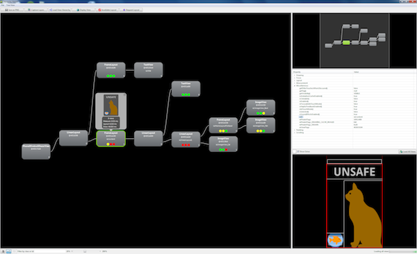
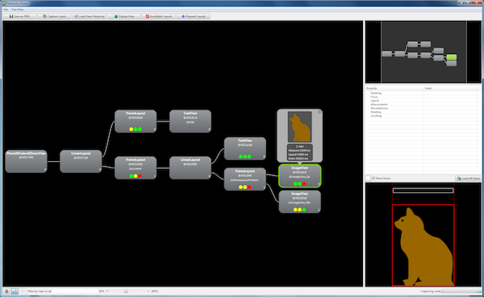
Посмотрим на следующую картинку:
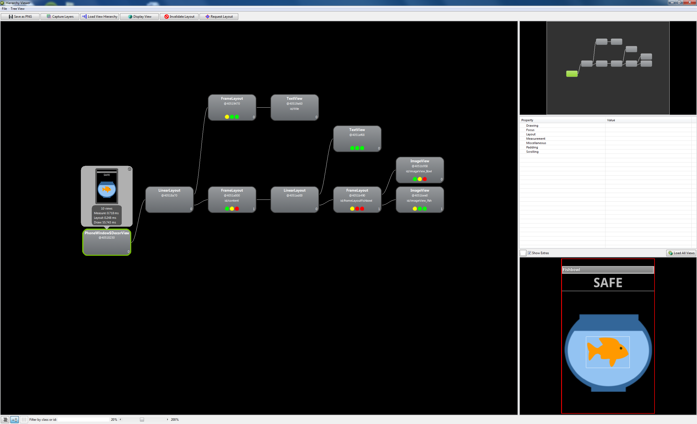
Обратите внимание на три цветные кружочки (точки) под каждым элементом:
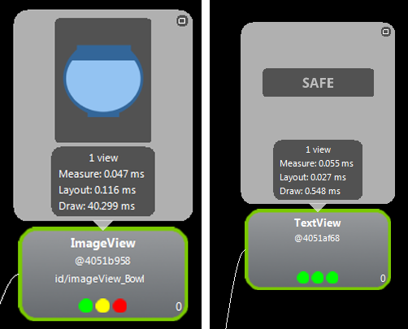
Они являются индикаторами производительности:
Точки могут быть красными, жёлтыми и зелёными. Красная свидетельствует о том, что рисование на экране идёт слишком медленно, жёлтая - удовлетворительно, зелёная - хорошая скорость отрисовки.
Если щелкнуть на элементе в дереве иерархии, вы также увидите актуальную информацию о производительности.
Если у объекта все точки зелёного цвета, то объект загружается очень быстро и вам не нужно заботиться о производительности. Желтый и красный цвет - повод задуматься и пересмотреть проект.
Например, для ImageView нужно попробовать использовать PNG вместо JPG (или наоборот), а также изменить размеры изображения, если это возможно.
Пересмотрите разметку. Например, RelativeLayout потребляет меньше ресурсов, чем TableLayout. Избегайте больших вложений одной разметки в другую.
Не перезагружайте экран элементами. Будьте проще.